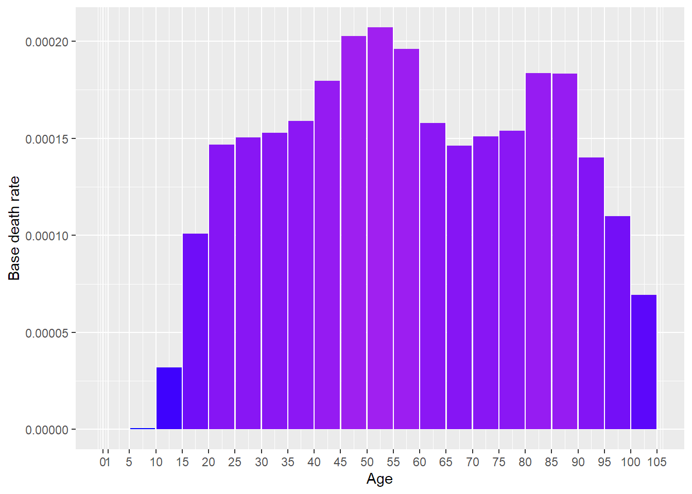
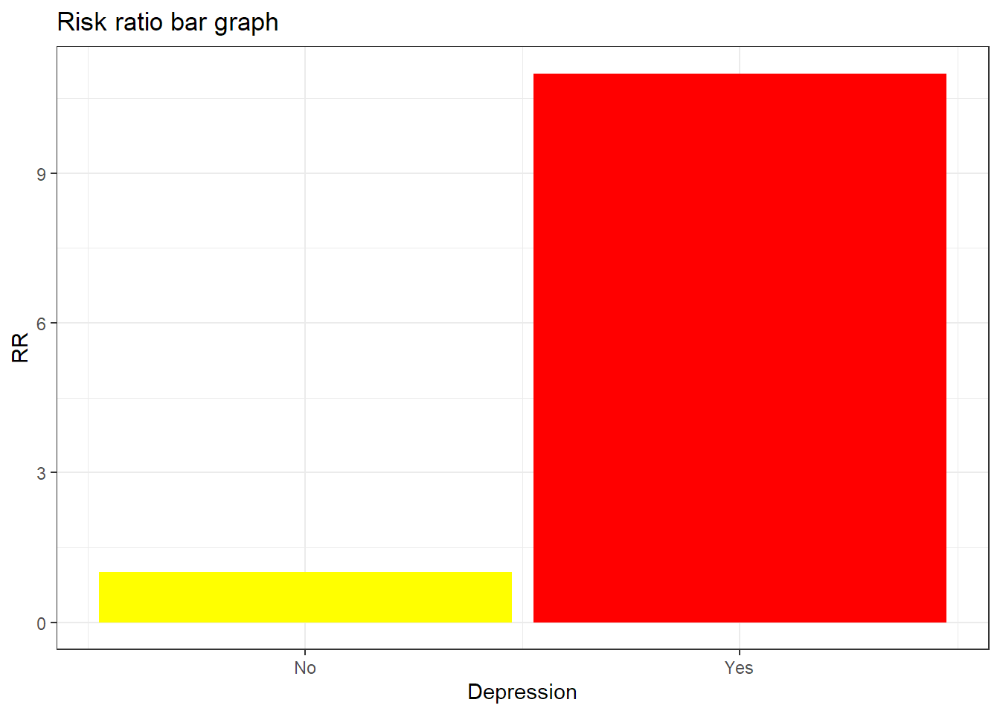

[auto-generated file]
Suicide is a death cause. It means that there is a certain probability that one dies from this.
Categories
Suicide is part of the following death cause categories
Risk factors
In the model Suicide has the following risk factors
Number of deaths
In 2014 Suicide was responsible for 1.63% of the deaths in the US. Below is a plot of how prevalent the death was for different ages (Xu et al. 2016)

Definition
The definition of dying from Suicide is to get any of the following ICD codes as the main cause of death on one’s death certificate. The percentage is the proportion of the deaths from Suicide who falls under the ICD code
X6 (16.0%)
- X60 (0.33%)
- X61 (2.4%)
- X62 (1.7%)
- X63 (0.11%)
- X64 (8.2%)
- X65 (0.086%)
- X66 (0.26%)
- X67 (2.6%)
- X68 (0.03%)
- X69 (0.19%)
X7 (80.0%)
- X70 (27.0%)
- X71: Intentional self-harm by drowning and submersion (0.88%)
- X72: Intentional self-harm by handgun discharge (13.0%)
- X73: Intentional self-harm by rifle, shotgun and larger firearm discharge (7.1%)
- X74: Intentional self-harm by other and unspecified firearm and gun discharge (30.0%)
- X75: Intentional self-harm by explosive material (0.016%)
- X76: Intentional self-harm by smoke, fire and flames (0.42%)
- X78: Intentional self-harm by sharp object (1.7%)
- X79: Intentional self-harm by blunt object (0.0023%)
- X80: Intentional self-harm by jumping from a high place (2.4%)
- X81: Intentional self-harm by jumping or lying in front of moving object (1.2%)
- X82: Intentional self-harm by crashing of motor vehicle (0.41%)
- X83: Intentional self-harm by other specified means (0.22%)
- X84 (0.19%)
Source: Xu et al. (2016), (“ICD Order Files 2014,” n.d.)
Interaction
The combined risk ratio of all risk factors is computed using the formula
\[
RR=RR_{\text{Depression}}
\]
The normalization factor is based on the joint distribution of all the risk factors and is computed using the formula
\[
P=P_{\text{Depression}}
\]
Depression
Depression is a risk factor for Suicide.
Below is a plot of the risk ratios we have taken from the literature alterated to fit our model

References
Xu, Jiaquan, Kenneth D Kochanek, Sherry L Murphy, and Betzaida Tejada-Vera. 2016. “Deaths: Final Data for 2014.” National Vital Statistics Reports 65 (4).